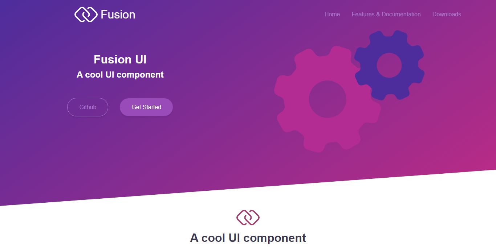
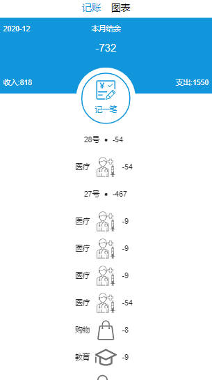
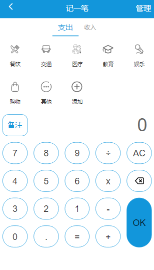
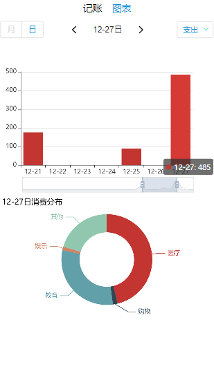
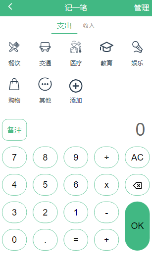
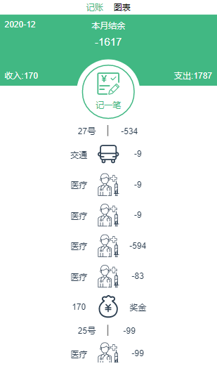
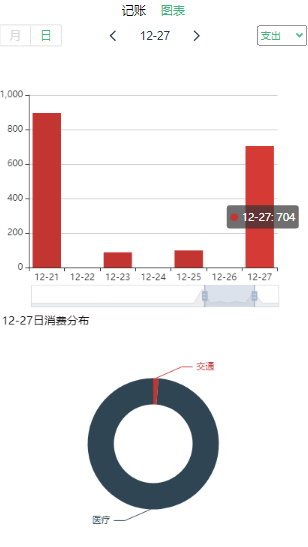
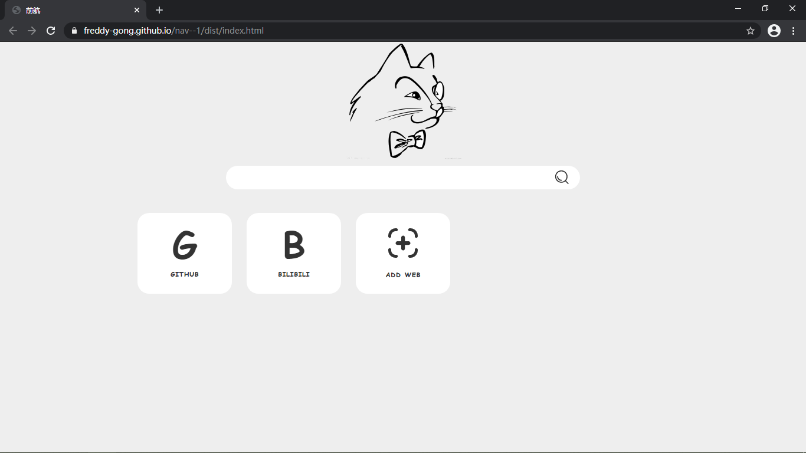
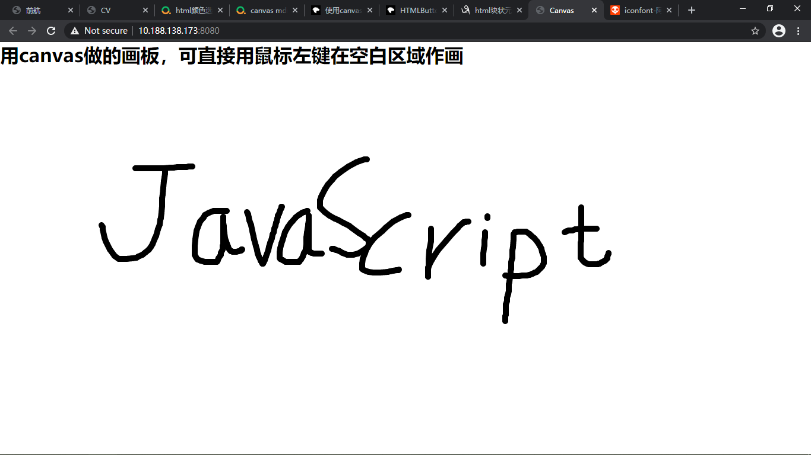

实习经历
1.网易雷火 (2021.1.25~至今)
实习经历：主要负责网易雷火自营游戏的双端的官网，专题页面以及游戏内置页面的开发。
实习经验：(1) 能够根据设计稿快速定位应该用什么样的布局。
(2) 更加熟悉webpack，可使用webpack自行配置Vue的开发环境。
(3) 了解并实践真实项目中的大量图片优化问题。
技术栈：Vue/Webpack/less
项目经历
1.Fusion(融合) UI(个人开源项目)
项目介绍：该项目是参照Framework7、Ant Design、Element UI等UI库思路，做的一套基于Vue 3的简易UI组件库，并且源码都是使用TypeScript进行编写，并且使用Vite作为创建项目模板。目前已支持Switch、Button、Tabs和Dialog组件。其他组件正在开发中。 每个组件均经历从需求分析到Mocha单元测试，最终制作官方文档，发布在npm上。完成该项目使我了解了Vue 3的许多新的属性，同时提升了的TypeScript能力，并且对前端工程化流程以及单元测试的重要性有了深刻的理解，进一步了解了开源文化。
技术：Vue 3/Vite/TypeScript/SCSS/Mocha/Chia
项目源码 在线预览2.靓仔记账(React版)
  项目介绍：靓仔记账是一款功能丰富的记账产品，也是一款基于React、TypeScript、react-router、Echarts实现的单页面应用。后台则是使用koa, mongoDB数据库进行制作，并最后通过nginx静态部署。由本人独立设计以及实现，期间遇到很多Webpack、TypeScript方面的问题，并将整个实现过程记录在个人博客。
实现功能：包含记账、图表、统计等页面，实现了记账、标签管理、数据统计等功能。项目使用create-react-app创建模板，通过Redux实现数据管理，通过React-router实现路由跳转，使用Echarts实现数据的统计和可视化。
技术栈：TypeScript/React/koa/mongoDB/nginx/create-react-app/react-router
3.靓仔记账(Vue版)
  项目介绍：靓仔记账是一款功能丰富的记账产品，也是一款基于Vue、TypeScript、Vuex、vue-router、Echarts实现的单页面应用。后台则是使用koa, mongoDB数据库进行制作，并最后通过nginx静态部署。由本人独立设计以及实现，期间遇到很多Webpack、TypeScript方面的问题，并将整个实现过程记录在个人博客。
实现功能：包含记账、图表、统计等页面，实现了记账、标签管理、数据统计等功能。项目使用vue CLI创建模板，通过Vuex实现数据管理，通过Vue-router实现路由跳转，使用Echarts实现数据的统计和可视化。
技术栈：TypeScript/Vue/koa/mongoDB/nginx/vue CLI/Vuex/vue-router
4.猫科导航
项目介绍：使用原生JavaScript，监听键盘事件，实现了一个可自定义的导航网站，同时加入了百度的收索功能，加深了对浏览器Storage的理解
技术栈：JavaScript/HTML/CSS/LocalStorage
项目源码 在线预览5.自制画板
项目介绍：使用原生JavaScript的canvas API，监听鼠标事件，实现了一个可以流畅作画的画板。
技术栈：JavaScript/Canvas/HTML/CSS/
项目源码 在线预览